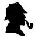

St. George İlahiyat Koleji Müdürü Doktor Elias Whitney’ın kardeşi, bir afyon bağımlısı yani afyonkeşti. Thomas de Quincey’nin kitabının etkisi altında kalarak, onun yaşadıklarını denemeye kalkışmış, içtiği tütüne afyon ruhu katarak en sonunda kendisi de bir afyonkeş olup çıkmıştı. Her zaman olduğu gibi, bırakmanın başlamaktan daha zor olduğunu anladığında ise iş işten çoktan geçmişti. Hayatını bir afyon bağımlısı olarak devam ettiriyordu artık. Bu alışkanlığı nedeniyle hem arkadaşları hem de yakınları için bir yüz karası olarak kabul görülüyordu. Ona üzülenler de yok değildi. Beti benzi atmış bir şekilde oturmaktan çok, zorla iliştirilmiş gibi öylece kalakaldığı sandalyenin üzerindeki görüntüsü bugün bile gözlerimin önündedir. Sapsarı ve kanı iyice çekilmiş bir surat, kontrolsüz bir şekilde sarkmış dudaklar ve iyice küçülmüş gözleriyle bu asil adam, şimdi bir çöküntüyü andırıyordu.
1889 yılının Haziranında bir gece yarısına doğru üzerimize mahmurluk çöktüğü sırada kapımızın çalınmasıyla karımla göz göze geldik. Oturduğum yerde doğrularak kapıyı çalanın kim olacağını düşünürken karım işlemekte olduğu örgüye ara vererek, biraz da üzgün bir ses tonuyla:
— Bir hasta. Dışarı çıkmak zorunda kalabilirsin, dedi.
Ben de mırıldanarak kendisini onayladığımı ifade eder gibi yaparken, bir yandan da yoğun geçen bir günün üstüne işte bu hiç olmadı gibisinden düşünmeye başlamıştım. Oldukça yorucu bir gündü ve söylenmeye başladım.
Az sonra dış kapının açıldığını duyduk. Kapı önünde telaşlı konuşmalar yapıldığını bulunduğumuz odadan bile anlayabiliyorduk. Konuşmalar kesildikten sonra yanımıza gelen kişinin önce hızlı ayak seslerini duyduk ardından da bulunduğumuz odanın kapısının açıldığını gördük. Üzerinde koyu renk elbisesiyle, yüzünü gizleyen ve siyah bir tül taşıyan bayan konuğumuz içeri girerek aynı telaşla konuşmaya başladı:
— Bu kadar geç bir saatte sizi rahatsız ettiğim için özür dilerim, dedikten sonra birden ne olduğunu anlamamıza bile fırsat vermeden karımın boynuna sarılarak ağlamaya başladı. Başım da önemli bir dert var Bayan Watson! Yardım edin.
Karım ne olup bittiğini anlamaya çalışırken şaşkın gözlerle bana bakıyordu. Kadının ağlamasından etkilenmiş olmalıydı.
— Tanrı’m, dedikten sonra konuşmaya başlamadan önce kadını tanımak için yüzündeki siyah tülü kaldırarak kadının kim olduğundan emin olmak ister gibiydi. Kate! Kate Whitney! Ah, Tanrı’m! Beni ne kadar korkuttun. Yüzüne bakıncaya kadar kim olduğunu çıkaramadım inan.
— Çok çaresiz bir durumdayım Bayan Watson! Başıma gelenlerden sonra bana ancak sizin yardımcı olabileceğiniz geldi aklıma, dedi.
Her zaman böyle olurdu zaten... Kim derdi olduğunu düşünse soluğu eşimin yanında alırdı.
— Ah Kate! Gelmene çok sevindim. Biraz şarap veya su iç. Rahatla lütfen... Daha sonra şuraya otur da olan biten her şeyi bana anlat istersen. James de uyumaya gidebilir.
— Lütfen biraz daha kalın Bay Watson! Mutlaka sizin de dinlemenizi istiyorum anlatacağım şeyleri. Bu konuda tavsiyelerinizi duymaya ihtiyacım var. Hem bakarsınız yardım da edersiniz, dedikten sonra bir yerlere hemen ilişerek anlatmaya başladı.
— Tahmin edebileceğiniz gibi, Isa ile ilgili bir sorun nedeniyle burada bulunuyorum. Konu Isa ile ilgili. Tam iki gündür eve adımını atmadı. Onun için iyiden iyiye endişeleniyorum artık... Ne olur yardım edin?
Bayan Whitney, karımın eski bir okul arkadaşıydı. Aile içi sorunlar nedeniyle zaman zaman onunla sohbet ettiklerini biliyordum. Kocasının sağlık sorunları olduğu zaman bazen bana da akıl danıştığı olurdu. Bu nedenle öncelikle olan biteni anlamak için onu sakinleştirmeye çalıştık. Kocasının nerede olduğu veya onu bulabileceğimiz bir yer bilip bilmediğine ilişkin küçük sorular sorduk.
Nerede olabileceğini tahmin edebiliyormuş ama emin değilmiş. Şehrin doğu tarafında bir yerlerdeki afyon tekkelerinden birine dadanmış olma ihtimalinin yüksek olduğunu da biliyormuş. Genel olarak ya da bugüne kadar kriz zamanlarında bu gitmeler en fazla 24 saat sürüyormuş. Her şart altında akşam biraz bitkin ve harap halde evin kapısını mutlaka çalarmış. Bu kez bir farklılık olduğunu hissediyormuş. Aklına kötü şeyler geliyormuş, haklı olarak. Çünkü 48 saattir ondan haber alamıyormuş. Bir ihtimal kocasını rıhtımın yakınında bir yerlerde çöplükte sızmış olarak bulabilirmişiz. Yukarı Swandam Sokağı’nda bulunan Altın Bar’da olma ihtimali de varmış. Ama bir kadın olarak bütün bunların üstesinden gelemeyeceğini de eklemede edemedi pek tabii. Böyle bir saatte barlarda çöplüklerde kocasını araması pek de yakışık almazdı, insanların kötü kötü bakacaklarından çekiniyordu.
Özetle bu ve benzeri şeyler anlattı Bayan Whitney. Esas mesele şuydu ki, bu işi halletmek için oraya kadar kendisine eşlik etmemizi istiyordu. Bayan Watson’ın gelmesine gerek olmadığını da hesaplamış ve kocasının doktoru olarak, hatta tek başıma bu işi üstlenmemin mümkün olup olmadığını öğrenmek istiyordu.
Elden ne gelir... Böyle bir durumda yardım etmekten kaçınmak mümkün değildi. İş başa düşmüştü bir kere. Kocasını vermiş olduğu adreslerde bulmam durumunda en geç iki saate kadar arabayla eve göndereceğime söz verdim. Çok değil, en fazla 10 dakika içinde sıcak evimi ve rahat koltuğumu terk edip hazırlandıktan sonra yola çıkmış bulunuyordum. Arabayla şehrin doğusuna, bilmediğim bir maceraya doğru yola koyuldum. Tuhaf bir hikâyenin beni beklediğini nasıl bilebilirdim ki?
İlk hedef afyon tekkesiydi pek tabii. İşin bu aşamasında fazla bir güçlükle karşılaştığım söylenemez. Bayan Whitney’in sözünü ettiği Yukarı Swandan Sokağı, nehrin kuzey yakasını Londra Köprüsü sayesinde doğu yakasına bağlayan bir merkez bölgedeydi. Üstelik rıhtımın arka taraflarında ve alabildiğine pis bir sokak olduğunu da hatırlatmak isterim. Afyonkeşlerin bu makbul mekânının bir mezbeleliğe benzediğine ilişkin peşin bir yargım vardı en baştan. Nihayet aradığım adrese gelmiştik. Arabacıya beklemesini söylediğimde iki bina arasında sıkışıp kalmış ve merdivenlerle inilen bir mahzeni andıran karanlık ve kuytu bir yerin önündeydik. Sarhoşların, ayyaşların ve keşlerin ayakları altında ezilip çürümüş merdivenlerden aşağı indiğim yer pek de iç açıcı değildi.
Bir gaz lambasının ışığı altında zar zor seçebildiğim bir kapı kolu gideceğim yönü işaret eder gibiydi. İçerisinin de dışarıdan kalır bir yanı yoktu. Kendinizi uzun yolculuğa çıkmış sürgün gemilerindeki göçmen koğuşlarında zannedebilirdiniz. Yüksek tavanlı olmayan bir odada yerlerde boylu boyunca uzayan yatakların arasında kesif bir afyon kokusu ve dumanlı hava sizi karşılıyordu. Burada nefes almak bile zordu. Yatakların üzerine tuhaf bir biçimde sanki üst üste yığılmış gibi duran insanlar, karanlıkta sanki istiflenmiş gibiydiler. Pek çoğunun omuzları çökmüş, dizlerinde eklemleri yokmuşçasına kıvrık, zayıf ve halsiz, kafalar kontrolsüz bir şekilde yana yatmış olarak uyuşmuş vaziyette yatıyorlardı. Feri sönmüş gözlerle sabit bir noktaya bakan gözler hayata tutunmaktan çoktan vazgeçtiklerini gösteriyor gibiydi. Sağda solda tesadüfen gücü kalmış bir ya da iki çift göz, içeri giren bu yabancıya sabitlenmiş gibi bakıyordu. Bu kesif dumanlı havanın içerisinde arada bir parlayıp sönen ateş topları, metal pipolardaki afyonun ciğerlerine dolarken çıkardığı bir imdat çığlığı gibiydi. Herkesin kafası cilalıydı. Bu yarı uyanıklık arasında gidip gelen yığın içerisinde kendi kendine konuşanları da anlamsız tartışmaların içerisinde bocalayıp duranları da görmek mümkündü. Kısa aralıklarla ortaya çıkan ölüm sessizliği bu ortama daha denk düşüyor gibiydi. Neticede daha çok kendi kendileriyle konuşuyor olmaları, aslında onların sayıkladıklarını gösteriyor demek anlamına da gelebilirdi. Odanın diğer ucuna doğru bir bakış atınca, kömür mangalının yanı başında, çenesini iki elinin arasına alarak derin düşüncelere dalmış gibi görünen, aslında önünde yanmakta olan ateşle meşgul olduğu anlaşılan, zayıf, uzunca boylu, ihtiyar adam gözüme ilişti hemen.
Bu sırada yanıma yaklaşan Malaya’lı olduğundan şüphe duymadığım biri, elinde tuttuğu pipoyu ve bir miktar afyonu bana vererek uzanmam için yer gösterdi.
— Hayır, teşekkür ederim, dedim. Burada bir arkadaşımı, Bay Isa Whitney’i arıyorum. Kendisiyle konuşmam gerekiyor.
İsmi söylediğim sırada odanın sağ tarafında bir kıpırdanma olduğunu fark ettim. Daha dikkatli bakınca bitkin ve perişan haldeki Whitney hemen gözüme ilişiverdi.
— Tanrı’m! Dr. Watson, burada ne işiniz var, derken aslında alabildiğine zavallı görünüyordu. Bedeni gergindi... Saat kaç Watson? diye sordu bana.
— 11’e geliyor, dedim.
— Hangi gündeyiz?
— Cuma, 19 Haziran.
— Ooo... Ben Çarşamba zannediyordum. Yoksa beni korkutmaya mı çalışıyorsun Watson? Çarşamba günündeyiz, değil mi?
Bu sırada yüzünü elleriyle gizlemeye çalışarak hüngür hüngür ağlıyordu.
— Emin ol Cuma günüdeyiz. Eşin iki gündür seni arıyor. İçine düştüğün durumdan utanmalısın?
— İyi de bu neyi değiştirir ki? Zaten yeteri kadar içine düştüğüm durumdan utanıyorum. Bu arada iki gün nereden çıktı? Ben yalnızca birkaç saattir buradayım. Sayısını karıştırmış olabilirim ama en fazla üç-dört pipo içmiş olmalıyım. Hepsi o kadar. Peki, seninle eve geleceğim. Kate’i korkutmak ister miyim hiç? O benim küçük Kate’im... Hadi, bana yardım et dostum! Arabayla geldin değil mi?
— Geldiğim araba dışarıda beni bekliyor.
— Tamamdır o zaman... Gidebiliriz... Borcumu da ödemem gerekiyor. Benim için ne kadar borcum olduğunu öğrenir misin Watson, rica etsem? Perişan halde olduğumu görüyorsun değil mi? Çaresizim...
Hadi bana kolay gelsin... Bu kesif afyon dumanının içinde şimdi bir de ödemeyle uğraşacaktım. Nerden bulaşmıştım ki bu işe? Hayıflanarak ve alabildiğine nefesimi tutarak uzanmış bir halde yatan bu insanların arasından geçerek mekânda ödeme yapacak birini aramaya başladım. Mangalın başında kor ateşle uğraşan adamın yanından geçerken belli belirsiz bir şekilde ceketimin birisi tarafından çekildiğini fark ettim. Fısıltıyla konuşan biri, bana hitaben,
— Bana bakma hemen. Gider gibi yapıp sonra dönüp bana bakarsın, dedi.
Sesi tanıyor gibiydim. Şu hemen yanı başımda oturan yaşlı adamdan geliyordu. Fakat o bundan habersizmiş gibi istifini hiç bozmadan oturmaya devam ediyordu. İyice zayıflamış suratını fark etmemek olmazdı bu yaşlı adamın. Afyon tüten piposu dizlerinin arasına düşmüş gibi eğreti duruyordu. Fısıltılı sesin söylediği gibi iki adım daha atıp geriye döndüm. O an gördüğüm şey karşısında az daha küçük dilimi yutmak üzereydim. Çok şaşırmıştım. Adam ustalıklı bir manevrayla öyle güzel bir pozisyon almıştı ki, onu benden başka kimsenin fark etmesinin olanağı yoktu. Gerçekten ustalık işi bir hamleydi. Daha bir dikkatli bakınca beni bu kadar şaşırtan adamın sırtındaki kamburun düzelir gibi olduğunu ve yüzündeki kırışıklıkların da kaybolduğunu, üstelik gözlerinin de parladığını görmüştüm. Mangalın başında oturan bu yaşlı adam, şimdi bana kıs kıs gülen Sherlock Holmes’tan başkası değildi aslında. Bana yine belli belirsiz bir hareketle yanına yaklaşmamı işaret etti, görüntüsünden tebdili kıyafete farklı bir görünümdeydi.
— Holmes, dedim ne olduğunu anlamak ister gibi, ne işin var burada senin? Bu halin ne?
— Sesini yükseltmeden konuş benimle, dedi, seni duyabiliyorum. Şu keş arkadaşından kurtul da konuşalım istersen.
— Dışarıda bekleyen bir araba var.
— Bu durumda, arkadaşını o arabayla eve göndermen daha uygun. Onun olan biteni anlaması pek mümkün görünmüyor zaten. Karına da benim yanımda olduğuna ilişkin bir not gönder de meraklanmasın. Sen dışarıda beş dakika kadar oyalanırsan yanına gelmiş olurum.
Holmes’un bu tip oldubittilerine alışık olduğumdan, bu davranışını yadırgamadım haklı olarak. Onu bu tip durumlarda reddetmek mümkün değildi. Öngördüğümüz şekilde kafası dumanlı Whitney’i fazla soru sormasına fırsat vermeden arabayla uğurlarken, Holmes’un yanında olduğumu anlatan küçük bir notu da karıma iletmesi için arabacının eline tutuşturmuştum. Arabacıya hizmetlerinin karşılığını ödedikten sonra sokakta sevgili dostum Holmes’un maceralarından birine daha katılmak için hazır sayılırdım.
Kısa süre sonra o pejmürde kıyafetler içerisinde bir silueti andıran Holmes, tekkeden çıkarak yanıma gelmiş ve birlikte yürümeye başlamıştık. Ben olan biteni anlayamamanın şaşkınlığıyla arada bir ona bakmaktan kendimi alamıyordum. Yanımda bir süre kambur bedeniyle topallayarak yürüyen Holmes, yeteri kadar uzaklaştığımıza kanaat getirdikten sonra etrafta kimsenin olmamasından emin olarak birden kamburunu düzeltti ve ağız dolusu bir kahkaha attı.
— Watson, sevgili dostum... Bakışlarından anladığım kadarıyla kokain çekme zaafımın ardından bu kez afyona merak sardığımı düşünmüyorsundur umarım?
— Bu kadar beklenmedik şekilde ve kamufle olduğunu görünce aklıma başka ne gelebilirdi ki?
— Ya peki, sen orada ne arıyordun?
— Az önce arabaya bindirdiğim arkadaşımı aramak için oradaydım.
— Ben de senin dediğinin tam tersi birşeyi, yani düşmanımı aramak için oradaydım.
— Düşman mı? O da kim?
— Benim kadim düşmanlarımdan birini arıyordum. Buna daha çok av demek daha doğru. Bu oldukça anlaşılmaz bir durum gibi görünüyor, biliyorum... Farkı da zaten burada... Watson, sevgili dostum, buraya aynı nedenle araştırma yapmak için geldim zaten. Biraz duman altı olmadan her zaman av izi sürmek pek mümkün olmayabiliyor. Bu keşlerin dillerinin altında bakla ıslanıp ıslanmadığını anlamak ve avıma ilişkin bilgi toplamak için onlarla muhabbet etmek yararlı olur diye düşündüm. Tanınmamak için de iyice kamufle olmam gerekiyordu. Hayatımı riske atmış olduğumun farkındayım. Bir ipucu bulmam gerekiyordu dostum. Üstelik buralara daha önce gelmişliğim de var. Bu gördüğün tekkenin sahibi olan densiz Lascar benden intikam almak için yemin etmiş tescilli bir düşmanım. Arka tarafta Paul Rıhtımı’na çıkan gizli bir kapı var... Kapı dile gelseydi de sana aysız gecelerde yaşanan gizli kapaklı hikâyeleri anlatsaydı...
— Cinayetlerden mi söz ediyorsun yoksa?
— Ne sandın ya? O karanlık dehlizde canı alınan zavallıların her biri için 1.000 Sterlin almış olsaydık, şimdiye kadar çoktan köşeyi dönmüş olurduk. Öyle ki rıhtımda yer alan en korkunç cinayetlerin tamamı burada işleniyor. Oraya infazı onaylanarak giren hiç kimse kurtulamaz. Neville St. Clair’de sanırım böyle bir kumpasa düşmüş olmalı. Bir dakika bekler misin, buralarda bir yerlerde bizim de sesimizi duyan birileri olabilir, dedikten sonra Holmes, belli belirsiz duyulabilecek bir ıslık çaldı. Uzaktan aynı şekilde cevaplanan ıslık sesinden hemen sonra bize doğru bir arabanın hareket ettiğini ve taşları döven tekerlek sesinin giderek yaklaştığını anlamamız fazla uzun sürmedi.
— Ne dersin Watson, benimle gelmek istiyor musun, dedi atlı arabanın karanlıkta gittikçe bize yaklaşan farlarını izlerken.
— Olabilir... Bir yardımım dokunacaksa elbette?
— Bir dost her zaman işe yarar, üstelik eli kalem tutan biri olmasına da hayır demem hiçbir zaman. The Cedars’ta senin için fazladan bir yatak her zaman vardır.
— The Cedars mı dedin?
— Evet... Söz konusu ev, Bay St. Clair’in. Soruşturma süresince orada kalmanın daha yararlı olacağını düşünüyorum.
— Tam olarak nereden söz ediyorsun, Tanrı aşkına?
— Hımm, Lee kırsalında bir yerlerden elbette. Buraya olsa olsa yedi mil kadar bir uzaklıktan söz ediyorum.
— İyi ama ben konuya tam anlamıyla yabancı kaldım.
— Sorun etme... Arabaya binecek olursan, birazdan her şeyi anlatacağım sana. Hadi ama, dedikten sonra araba sürücüsüne dönerek:
- John, senin görevin buraya kadar. Her şey için teşekkür ederiz. İşte bu da yarım altının... Yarın 11 gibi gelirsen görüşebiliriz, dedi.
Ardından sürücünün yerine oturarak atları hafifçe kırbaçladı ve arabayı hareket ettirdi. Yol giderek genişlerken, kirli bir nehrin üzerine kurulu biraz geniş bir köprüye doğru uzanıyordu. Kiremitlerin tekdüze yığını altında sessizce ilerlerken, bazen bir polisin belirgin şekilde kaldırımları ezerken çıkardığı topuk sesi ya da sağda solda mütemadiyen duyulan sarhoş melodileri gecenin sessizliği bozuyordu. Bir bulutun peşine takılmış gibi adeta sürüklenerek akan gökyüzünün hızlı akışı, sanki hemen arkalarından bize gülümsemek isteyen yıldızların neşesini örtmek ister gibi telaşlıydı. Bu sırada kafasının karmakarışık olduğu her halinden belli olan Holmes, sesini çıkarmadan başıyla yalnızca gideceğimiz yere odaklanmış gibi derin düşüncelere dalmıştı. Ben de meraklı bir bekleyişin esiri de olsam, sessiz ve sakin bir şekilde bana açıklama yapmasını bekleyen uslu bir öğrenciye benziyordum. Sıramın geleceğini biliyordum.
İlerlemeye devam ettik... Birkaç mil sonra artık şehrin arka mahallelerinin sınırına kadar gelmiş bulunuyorduk. Bu sırada Holmes, sanki bu anı bekliyormuş gibi şöyle bir kendine gelmek için oturduğu yerde omuzlarını düzeltirken, bir yandan da piposunu yakmayı ihmal etmedi.
— Sıranın sana gelmesini beklerken takındığın şu sessiz olma tavrı çok etkileyici, Watson! Seni bu nedenle daha çok seviyorum. İyi bir arkadaşsın. Birileriyle konuşma ihtiyacı duyduğumun sen de en az benim kadar farkındasın. İçinde bulunduğum karmaşık durumdan çıkmak için bunu birilerine aktarmam gerektiğini biliyorum. Bu nedenle yanımda olman beni sevindirdi dostum. Şimdi ne düşündüğümü soracak olursan, kapıda bizi karşılayacak bayana ne diyeceğimi hesaplıyorum...
— Ama konu hakkında henüz bilgi vermedin bana.
— Haklısın... Ama Lee’ye gidinceye kadar anlatırım. Basit gibi görünen bir konu olmasına karşın pek bir ilerleme sağlayamadığımı söyleyerek başlayalım istersen. Bazı bilgi kırıntıları var ama bunlar arasındaki bağlantıyı kurmak o kadar kolay görünmüyor. Senin tam da bu noktada bana yardımın dokunacağını düşünüyorum, sevgili Watson! Bildiklerimi sana aktarmaya başlayabilirim artık... Olur da aklına birşeyler gelirse ya da farkına varamadığım birşeyler hissedersen lütfen paylaş benimle.
— Peki...
— 1884 yılı Mayıs ayına yani birkaç ay öncesine gidiyoruz. Lee’ye bir beyefendi gelmiş bu günlerde. Adı, Neville St. Clair. Burada bir süre aradıktan sonra güzel ve büyük bir villa alıp kendi zevkine göre döşemiş. Her şey hazır olunca da villasında zenginlik içerisinde yaşamaya başlamış. Derken, her zaman olduğu gibi, çevresi giderek genişlemeye başlamış. İnsanları tanıdıkça farklı kişilerle dost olmaya başlamış. 1187 yılına geldiğimizde ise yerel bir bira üreticisinin kızıyla tanışarak evlenmişler. Bu evlilikten de iki çocukları olmuş. Bu adamın her ne kadar her zaman başında olması gereken bir işi bulunmuyor da olsa ticari bağlantılarını takip etmek, onlarla bağını koparmamak için kent merkezine düzenli olarak her sabah gittiğini ve aynı şekilde her akşam saat 17:14’te de döndüğünü biliyoruz. Kendisi 37 yaşında...
İyi bir eş ve aile babası. Sakin bir kişiliği ve sevgi dolu bir yüreği var. Üstelik herkes tarafından sevilen biri Bay St. Clair. Yaptığımız araştırmaların sonuçlarına bakacak olursak, Capital&Counties Bankası’nda 220 Sterlin kredisi ve bunun karşılığında da 88 Sterlin borcu bulunuyormuş. Bu rakamlara bakınca ekonomik anlamda hali vakti yerinde olduğunu söyleyebiliriz. Parasal sorunlar onun için kolayca üstesinden gelebileceği birşey.
Geçen pazartesi gününe geliyorum... O gün Bay Neville St. Clair, her gün yaptığından farklı olarak kente biraz daha erken gitmiş. Üstelik giderken önemli iki işi olduğu bilgisini de vererek çıkmış evden. Akşam gelirken oğlu için bir kutu oyuncak kiremit getireceği sözünü vermekten de geri kalmamış.
Yalnızca bu da değil. Kocası evden çıktıktan kısa bir süre sonra karısının eline, Aberdeen Taşımacılık Şirketi’nde kendileri adına bir paketin bulunduğunu gösteren bir telgraf ulaşmış. Buraları biraz tanıyorsan, söz konusu nakliyat şirketinin Yukarı Swandam Sokağı’nın hemen kuzeyinde, Fresno Sokağı’nda olduğunu biliyorsundur. Geçerken bu bilgiyi de verdikten sonra yeniden olayın gelişimine dönüyorum. Bayan St. Clair, bu haberi de aldıktan sonra günlük işlerini hallederek öğle yemeğinin hemen ardından, şehre inmiş. Küçük bir alışverişin ardından taşımacılık şirketine giderek söz konusu paketi almış ve 16.35 sularında yeniden Swandam Sokağı’nı takip ederek istasyona doğru yola çıkmış. Buraya kadar sanırım anlaşılmayan birşey yok.
— Haklısın... Anlaşılmayan birşey yok...
— Pekâlâ... Pazartesi günü havanın aşırı sıcak olduğunu hatırlıyorsundur umarım. İşte böyle bir günde Bayan St. Clair ağır ağır sokakta ilerlerken, biraz da sokaktan ürkmüş bir şekilde, arabaya binmesinin daha uygun olacağını düşünmüş. Çevrede bir araba bulurum umuduyla Swandam Sokağı’nda ilerlerken bazı gürültüler duymuş. Ne olup bittiğini daha iyi görmek için başını kaldırdığında ise gördükleri karşısında iyice şaşkına dönmüş. Çünkü kocası bir binanın ikinci katından ona işaretlerle birşeyler anlatmaya çalışıyormuş. Kadın, o an pencereden gördüğü kadarıyla kocasının yüzündeki ifadeden sıkıntıda olduğunu anlamış. Adamın karısına eliyle işaret ettiğini gören birileri ani bir hareketle onu hızla pencereden uzaklaştırmış ve kadın kocasını artık göremez olmuş. Kadının dikkati takdire şayan: O kısacık zaman diliminde kocasının üzerinde sabah evden çıkarken üzerine giydiğine benzeyen koyu renk bir ceket olmasına karşın, ne yakalığı ne de kravatı bulunuyormuş boynunda.
Kadın, o an kocasının başının dertte olduğunu düşünerek hemen dış merdivenlerden aşağı doğru koşmaya başlamış; evin bu gece seninle karşılaştığımız afyon tekkesi olduğunu da ekleyelim. Kadın, hızla ilk girdiği odayı geçip hızla merdivenlere koşmuş. Daha doğrusu koşmaya çalışmış. Çünkü Lascar, merdivenlere ulaşamadan kadının önünü kesivermiş. Daha sonra da Danimarkalı bir adamla birlikte kadını sokağa atmışlar. Kadın o panik ve telaşla sokaktan aşağı koşarak yardım isteyebileceği birilerini aramış. Neyse ki şansından o sırada devriyeye çıkmış olan birkaç polisle karşılaşmış yolda.
Olayı aydınlatmak isteyen bir müfettiş ve iki polisi yanına alan kadın, ev sahibinin itirazlarına aldırış etmeden Bay St. Clair’in göründüğü kattaki odaya çıkmışlar. Adamın orada olmadığını tahmin edersin, öyle de olmuş. Çıktıkları katı kendi mekânı olarak gören çirkin suratlı bir dilenciden başka kimsecikleri ortalıkta görememişler. Bay Tavşan Dudak ve Lascar denilen soysuz, odada böyle bir olayın yaşanmadığına yemin ederek, polisleri inandırmaya çalışmış. Müfettiş, çaresiz bir şekilde tam bu adamların söylediklerine inanıp, yanıldığını söylemeye kalkışacağı sırada kadın, küçük bir çığlık atarak birden masanın altına uzanıvermiş. Orada bulduğu küçük kutunun kapağını açınca Bay Clair’in akşam çocuklara getireceğini söylediği kiremit oyuncaklar yere saçılmış.
Bu gelişme üzerine pek de güven vermeyen bu iki adamın söylediği tutarsız açıklamaları yan yana getiren müfettiş olaya daha fazla önem verilmesi gerektiğini anlamış haklı olarak. Bunun üzerine o kattaki odaları daha bir ayrıntılı incelemeye başlamışlar. Elde ettikleri bilgileri yan yana getirince burada korkunç bir cinayet işlendiğine kanaat getirmişler.
Sokağa bakan ve daha çok oturma odasını andıran oda, buranın tersine rıhtıma bakan daha küçük bir yatak odasına açılıyormuş. Evin yatak odasındaki pencere ile rıhtım arasında kalan kesiminde gelgit sırasında sular yükselince içi suyla dolan biraz dar bir bölge varmış. Bu yöne bakan pencerenin epey geniş olduğunu ve alttan da açılabildiğini anımsatmak isterim. Polisin yaptığı ayrıntılı inceleme sırasında bu pencerenin denizliğinde ve odanın ahşap zemininde kan izi bulunmuş. Bu arada başka ayrıntılar da var elbette... Bay Neville St. Clair’in elbiselerinin tamamı oturma odasında, bir perdenin arka tarafından çıkmış. Yalnızca bu da değil... Çizmeleri, çorapları, şapkası ve hatta saati bile oradaymış ama ceketi yokmuş. Elbiseleri de zorla çıkartılmış gibi görünmüyormuş. Buna karşın Bay Neville St. Clair sırra kadem basmış. Olasılıklar içinde akla en yatkın olanı, pencerenin oradan yüzerek kaçmış olabileceği şeklinde.
Şimdi bu hikâyenin diğer figüranlarına bakalım biraz da... Onlar da bu olayın içindeler ne de olsa... Lascar’ı ele alalım öncelikle... Bayan St. Clair, Lascar’ın kötü sabıkasını, soysuzluğunu bilmiyor ama yine de kocasını pencereden görmesinden hemen sonra koşarak geldiğinde kendisini merdivenlerin başında engellemiş olmasına bakarak bu adamın olsa olsa yataklık yapmış olabileceğini söylüyor. Bu kötülük abidesinin ifadesi de zaten oldukça acemiymiş. Güya, ne kiracısı Hugh Boone’un ne işle meşgul olduğundan haberdarmış ne de Bay St. Clair’in elbiselerinin oraya neden ve nasıl geldiğinden falan. Kendisine inanacak olursak ilk kez görüyormuş üstelik...
Biraz da şu çirkin surattan söz edelim... Afyon tekkesinin ikinci katını kendine mekân edinen ve Bay Neville St. Clair’i son gören kişi olması en muhtemel figür olarak karşımıza çıkan dilencinin adı Hugh Boone. Bu bay çirkin suratı şehirde neredeyse herkes tanır. Dilenciliği meslek olarak edinmiş olmasına karşın biraz da polisten kaçmak için kendisini kibrit satıcısı olarak gösterir. Bu Bay Tavşan Dudak’ı her zaman aynı yerde rastlamak mümkündür. Buradan fazla uzak olmayan Threadneedle Sokağı’nın sol tarafında, sen de fark etmiş olmalısın, girintili bir bölüm onun ‘işyeri’dir. Her gün burada bağdaş kurmuş vaziyette oturarak kibrit sattığını düşünebilirsiniz. Oysa acınacak haldeki fiziksel özelliği sayesinde insanlar onu görünce merhamete gelip daima önünde duran şapkasının içine sadaka bırakmaktan geri kalmazlar.
Dikkat çekici bulduğumdan onu gözlediğimi itiraf edebilirim. O küçük yardımlar sayesinde kısa sürede elde ettiği kazancı söylesem hayret edersin. Fiziksel kusuru nedeniyle yoldan geçenlerin onu görmemesi neredeyse imkânsızdır. Onu sokaklarda gördüğümüz diğer dilencilerden ayıran en belirgin fiziksel özellikleri arasında; hastalıklı bir surat, tavşan dudağına kadar inen ürkütücü bir yara izi, buldok yapılı bir çene ve portakal rengi saçlarıyla tam bir zıtlık oluşturan koyu renk bir çift göz sayılabilir. Bu dilencinin artık, arama yapılan katın güya kiracısı ve hatta Bay St. Clair’i gören son kişi olduğunu söyleyebiliriz.
— Ama adam özürlü.
— Yürürken biraz aksadığını söyleyebiliriz. Ama bunun dışında oldukça güçlü ve sağlıklı olduğunu düşünüyorum. Bir doktor olarak sen de takdir edersin ki, bazen bir organdaki zayıflık diğer organların daha güçlü olmasına neden olabiliyor.
— Rica etsem, hikâyeye devam eder misin?
— Polis incelemesi sırasında ortaya çıkan penceredeki kanı görünce Bayan St. Clair bayılmış. Polisler kadının bu durumda burada kalmasının yararsız olduğunu düşünerek evine götürmüşler. Bu sırada evdeki incelemelerine devam eden Müfettiş Barton, işe yarar birşeyler bulamamış maalesef. İşin bu aşamasında belki Boone’un hemen tutuklanmamış oluşu soruşturma açısından bir fırsatın elden kaçmasına neden olmuş olabilir. Çünkü bu dilencinin o kısacık zaman diliminde 5-10 dakikalığına da olsa Lascar’la konuşmuş olması kuvvetle muhtemel görünüyor. Hatalarını anlayıp üzerini aradıklarında ise birşey bulamamışlar doğal olarak. Gömleğinin sağ kolunda dikkatlerden kaçmayan kan lekesini ise sağ parmağındaki yara izini göstererek açıklamaya kalkışmış. Yine aynı sakin duruşla pencerede bulunan kan lekelerini kastederek, daha önce burada olmadığına ilişkin yemin etmiş. Ona göre bütün lekeler farklı bir yerlerden bulaşmış olabilirmiş falan... Yalnızca bu da değil... Bay St. Clair’in elbiselerinin bu odada ne aradığına kendisi de en az polisler kadar şaşırmış güya. Bayan St. Clair’in kocasını bu odanın penceresinde görmüş olmasına ise, kadının halüsinasyon gördüğünü öne sürerek cevap vermiş. İnandırıcı gelmeyen tutum ve davranışları nedeniyle tüm karşı çıkmalarına karşın zorla karakola götürülmekten kurtulamamış yine de. Müfettiş Barton ise suyun çekilmesini beklemeye karar vererek, belki daha başka kanıtlar bulabilirim ümidiyle orada kalmış.
Deniz bir süre sonra çekilmiş elbette. Ama çamurların içerisinde yapılan incelemede Bay St. Clair değil de kayıp olan ceketi bulunmuş. Ceketin cebinde bulunan şeyi tahmin edebilir misin?
— Nasıl tahmin edebilirim ki?
— Bence de öyle... Ceket cepleri bozuk para doluymuş. 421 Peni ve 270 yarım Peni. Ceketin çamura saplanmasının nedeni de bu olmalı diye düşünüyorum. Bedeni nerede o zaman? Onun da nehre sürüklendiği tahmin ediliyor.
— Bu işte bir terslik olmalı bana göre. Adamın bütün elbiselerini odada bulduğunuzu söylediniz. Bu durumda yalnızca ceketinin üzerinde olması biraz tuhaf değil mi?
— Pek değil... Ama yine de kuşkuyu elden bırakmamakta yarar var. Diyelim ki Boone denilen çirkin surat, Bay Neville St. Clair’i pencereden itti. Bu durumda sanırım kimse onu görmedi. Yapılması gereken birşey daha vardı: Adamın elbiselerinin de yok edilmesi gerekiyordu. Ceketi dışarı atacağı sırada, suyun üzerinde yüzeceği aklına gelmiş olmalı. Onu dibe batıracak birşeyler bulması gerektiğinin farkına varıyor ama zaman sıkışık. Çünkü bu sırada aşağıda kadının Lascar’la olan tartışmasını ve ardından polislerin geldiğini duymuş olmalı. Telaşla aklına gelen ilk çareye başvuruyor ve dilencilikten kazandığı metal paraları ceketin ceplerine doldurarak pencereden dışarı atıyor. Bu anda yaklaşan ayak seslerine yakalanmamak için kalan elbiselere birşey yapamayacağını anlayınca pencereyi kapatarak kendisine uygun bir köşe bulup beklemeye başlıyor.
— Mümkün...
— Daha iyi bir tahmin yapıncaya kadar şimdilik bununla yetinebiliriz. Az önce de söylediğim gibi Boone denilen adam şimdi karakolda. Oradan birşey çıkacağını pek sanmıyorum aslında. Dilencilik yaptığı her ne kadar tescilli de olsa başka bir suça bulaştığına ilişkin bir bilgi yok.
Bunlar makul ve mantıklı... Oysa asıl yanıtlanmayı bekleyen başka sorular var... Öncelikle Bay Neville St. Clair’in bu afyonkeşlerin tekkesinde ne işi vardı? Orada neler yaşadı? Hugh Boone’un bu işteki rolü nedir? Sana şunu itiraf etmeliyim ki sevgili dostum, basit bir olayın bu kadar karmaşık olduğu başka bir olay daha önce başıma hiç gelmedi.
Holmes’un anlatımı sona gelirken, arabamız da şehrin dışına doğru kırsal bölgelere yönelmişti. Sohbetimiz sona erdiğinde ise pencerelerinden tek tük ışıkların sızdığı bir köyün içerisinden geçiyorduk.
— Lee’nin dış mahallelerine geldik sayılır, dedi Holmes. Middlesex’ten başlayan yolculuğumuz Surrey’in hemen ardından Kent’e ulaştırdı bizi. Şuradaki ağaçların arasından sızan ışıkları görebiliyor musun Watson? İşte orası da The Cedars... Lambanın yanında oturan kadın da atların ayak seslerini duymuş olmalı sanırım...
— Fakat senin araştırmayı asıl Baker Sokağı’nda yürütmen gerekmez miydi?
— Haklısın, fakat orada araştırılması daha çok iş var. Bayan St. Clair kullanmam için bana iki oda verdi burada. Eminim senin hem meslektaşım hem de arkadaşım olduğunu öğrenince yanımda olmana sevinecektir. Kocasına ilişkin iyi bir bilgi veremediğim sürece onunla karşılaşmak beni üzüyor sevgili dostum. Her neyse, işte geldik...
Bu sırada büyük bir köşkün önünde durmuştuk. Kâhya arabamızı götürmek için hemen yanımızda bitivermişti. Ben de bu sırada Holmes’un peşi sıra çakıl yolu takip ederek eve doğru yürümeye başlamıştım. Köşkün kapısı biz yanına vardığımızda usulca açılıverdi. Karşımızda şimdi boyun ve bilek kısımları pembe şifonlarla bezenmiş muslin elbiseli, sarışın ve biraz kısa boylu bir kadın duruyordu.
Vücudu biraz öne doğru eğilmiş vaziyette, bir elini kapıda tutarken diğerini kararsız bir şekilde havada tutuyordu. Bu sırada merakı gözlerinden okunabiliyordu. Hemen konuya girdi:
— Bir gelişme var mı, diye söze soruyla başlarken iki kişi olduğumuzu görünce nezaketen sevindiğini belli ederek, derin bir iç çekti.
— İyi bir haber getirmiş olabilir misiniz?
— Hayır.
— O zaman kötü bir haber getirdiniz?
— Hayır.
— En azından buna sevinebiliriz. Lütfen içeri girin, kapıda kaldınız. Uzun ve yorucu bir günün ardından dinlenmeniz gerekiyor.
—Dostum Watson’ı sizinle tanıştırmama izin verin. Birçok olayda beraberdik ve kendisinin bana çok yardımı dokunmuştur. Tesadüfen onunla karşılaşınca bize yardımı dokunacağını düşünerek, kendisini buraya davet ettim.
— Çok memnun oldum Bay Watson, dedi içtenlikle elimi sıkarken. Bu ani ziyaretinizde bir eksiğimiz olursa lütfen bizi bağışlayın.
— Bayan Clair, eski bir asker olduğum için böylesi durumlara alışkın olduğumu ifade etmek isterim. Burada size ve dostum Holmes’a yardımcı olabilirsem, ne mutlu bana.
— Bay Holmes, dedi kadın üzerinde akşam yemeği hazırlanmış olan yemek odasına girdiğimizde, size bazı şeyler soracağım. Ama rica ederim bana samimi cevaplar verin.
— Bundan kuşkunuz olmasın hanımefendi.
— Duygusal olarak nasıl tepki vereceğime takılmayın lütfen. Hiçbir koşul altında krize de girmeyeceğim, bayılacak da değilim. Her şeyi bana olduğu gibi söyleyin.
— Emin olabilirsiniz.
— Bay Neville’in yaşadığına inanıyor musunuz?
Fazlasıyla net bir soruydu. Holmes biraz sıkılır gibi olmuştu.
Kadın bir kez daha hatırlatma ihtiyacı hissederek,
— Sizden dürüst bir cevap bekliyorum, dedi merakla beklerken.
— Peki... Size karşı açık konuşacağım: İnanmıyorum!
— Ölmüş olduğuna mı inanıyorsunuz peki?
— Evet.
— Öldürülmüş olma ihtimali var mı?
— Bunu kastetmedim. Bilemiyorum... Olabilir de olmayabilir de...
— Hangi gün ölmüş olabilir sizce?
— Pazartesi.
— Bay Holmes, ondan bugün bir mektup aldım!
Bu beklemediği bir gelişmeydi. Holmes, ani bir hareketle yerinden sıçradı.
— Bu nasıl olabilir, diye sert bir tepki verdi.
— Bugün geldi, dedi kadın elinde tuttuğu mektubu gülümseyerek sallarken.
— Bakmama izin verir misiniz?
— Tabii.
Henüz kadının cevabını beklemeden zaten mektubu eline almıştı bile. Daha sonra masada lambadan gelen ışığa iyice sokularak mektubu dikkatli bir şekilde inceledi. Ben de heyecanlanmıştım doğal olarak. Ayağa kalkmış ve omzunun üzerinden mektuba bakmaya başlamıştım. Mektup kalın bir zarfla gönderilmişti. Üzerinde de bugünün tarihini gösteren mühürlü bir Gravesend pulu vardı.
— Hoyratça yazılmış, dedi Holmes, belli belirsiz bir sesle ve zarfı göstererek, bu eşinizin el yazısı olmasa gerek.
— Haklısınız fakat mektuptaki yazı ona ait.
— Bana göre bu mektubu postaya veren kişinin adresi araması gerekmiş.
— Nasıl, anlamadım?
— İsmi yazarken, dikkatli bakarsanız yazının kendiliğinden kurumaya bırakıldığını hemen anlayabilirsiniz. Yazının diğer yerleri daha gri gibi. Bu, bize bu bölümlerde kurutma kâğıdı kullanıldığını gösteriyor. Zarfın üzerindeki yazıların tamamı aynı anda kurutulmuş olsaydı, bu durumda ismin de gri bir renk alması gerekirdi. Bu sayede, zarfın üzerini yazan kişinin ismi önceden yazdığını ve adresi yazmak için de bir süre beklediğini öğrenmiş oluyoruz. Demek ki adresi bilmiyordu. Küçük bir ayrıntı gibi görünebilir ama deneyimlerimiz, bize detayların önemli olduğunu göstermiştir. Şimdi biraz da mektuba bakalım. Zarfın içinde başka birşey daha vardı sanırım?
— Haklısınız, bir yüzük, bir mühür yüzüğü vardı.
— Bu yazının eşinize ait olduğundan emin misiniz?
— Onun el yazısı çeşitlerinden bir tanesi.
— El yazılarından mı dediniz?
— Daha çok acele edeceği zaman bu yazıyı kullanır. Genelde kullandığı el yazısına pek benzemez ama bunu da kullandığını biliyorum.
— Sevgilim, korkma sakın. Her şey düzelecek, göreceksin. Büyük bir hata var ve bunun düzeltilmesi gerekiyor. Biraz zaman alabilir. Sabırlı ol! NEVILLE.” Bir kitabın boş sayfasına yazılmış, kurşunkalemle. Islak değil. Temizliğe pek de önem vermeyen biri tarafından Gravesend’den gönderildiği anlaşılıyor. Zarf, anladığım kadarıyla tütün çiğneyen biri tarafından yapıştırılmış görünüyor. Bu mektubun eşiniz tarafından yazıldığından kesinlikle eminsiniz, değil mi?
— Eminim, evet. Neville yazmış.
— Bugün Gravesend’den postaya verildiği anlaşılıyor. Siz yine de fazla iyimser olmayın Bayan St. Clair. Tehlike tam olarak geçmiş sayılmaz.
— Bu mektup bize yaşadığını kanıtlar, değil mi Bay Holmes?
— Böyle olmaması için hiçbir neden yok. Yeter ki biri bize oyun oynuyor olmasın. Bu arada yüzük pek birşey kanıtlamıyor; çünkü ondan alınmış da olabilir.
— Bu yazının onun el yazısı olduğundan eminim, Bay Holmes.
— Şunun olması da mümkün: Mektup pazartesi günü yazılmıştır ama bugün postaya verilmiştir.
— Haklısınız.
— Eğer böyleyse, arada geçen zamanda çok şey yaşanmış olabilir.
— Oh, Bay Holmes! Lütfen beni daha fazla karamsarlığa sürüklemeyin. Her şey yolunda. Aramızda güçlü bir duygusal bağ vardır bizim. Eğer başına kötü birşey gelmiş olsaydı bunu mutlaka hissederdim. Öyle ki, bakın size küçük birşey anlatayım. Geçenlerde yatak odasında elini kestiğini ben yemek odasındayken hissedip hemen yanına koşmuştum. Bu, küçük ve sıradan bir olay. Başına daha önemli birşey gelmiş olsa hissetmez miyim sanıyorsunuz.
— Olur mu öyle şey! Ben, birçok kez buna ilk elden tanık olan biriyim. Bir kadının sezgilerinin ne kadar güçlü olduğunu bildiğim için, çözümleyici aklın çıkardığı sonuçlardan daha çok onların sezgilerine güvenirim. Bu nedenle sanırım mektupla birlikte hissiyatınızın artmış olmasını anlayışla karşılayabiliyorum. İyi ama bu durumda kocanız neden eve dönmüyor?
— Kim bilir? İnanılmaz bir durum. Neden böyle davrandığını anlayamıyorum...
— Size küçük bir haber bile vermeden, pazartesi günü ansızın ortadan kaybolması pek mantıklı değil üstelik.
— Öyle denilebilir.
— Swandam Sokağı’nda gördüğünüz ana dönecek olursak yeniden, o an çok şaşırdınız herhalde?
— Hem de nasıl.
— Pencerenin açık olduğunu söylemiştiniz, değil mi?
— Evet.
— Bu sırada size seslenmiş olabilir mi?
— Belki.
— Fakat siz yalnızca çığlık sesini duydunuz.
— Haklısınız.
— İmdat, diye seslenmiş olabilir mi?
— Olabilir pek tabii. El de salladı.
— Birden aşağı doğru çekildiğini mi gördünüz?
— Öyle birşey, evet. Birden yok oldu.
— Kendisinin geriye doğru sıçramış olması da mümkün. Odada başka birini gördünüz mü?
— Hayır, görmedim. Fakat o korkunç suratlı adam zaten odada olduğunu söylüyor. Lascar da içeri girdiğimde merdivenin dibinde bitivermişti aniden.
— Evet... Kocanız size el kol işareti yaparken üzerinde kendi giysileri vardı, değil mi?
— Öyle ama üzerinde her zamanki yakalığını ve kravatını görmediğime eminim. Çıplak boynunu gördüğümü net bir şekilde hatırlıyorum.
— Peki, Swandam Sokağı’ndan size daha önce söz ettiğini hiç hatırlıyor musunuz?
— Hayır.
— Afyon kullandığına ilişkin birşeye hiç tanık oldunuz mu?
— Kesinlikle hayır.
— Bu bilgiler için teşekkür ederim, Bayan St. Clair. Bazı şeylerden emin olmak için her şeyin üzerinden bir kez daha gitmek yararlı olabiliyor. Bunları size onun için sordum. Artık yemeğimizi yiyebiliriz sanırım. Daha sonra da odalarımıza çekilmeyi planlıyoruz. Yarın, hepimiz için yorucu bir gün olacak sanıyorum.
Çift yataklı, geniş ve ferah odamıza çıktık yemekten sonra, günün yorgunluğunu atmak için hemen yatağa girdim, bütün bir gece süren macera beni fazlasıyla yormuştu. Buna karşın Sherlock Holmes, aklına takılan bir konu veya olay olduğunda günlerce, hatta haftalarca dinlenmeden çalışabilirdi. Konuya ilişkin sonuç alabileceği bir noktaya gelmeden veya konunun henüz sonuç alınabilecek kadar olgunlaştığına hükmetmeden öncelikle bildiklerini yeniden bir araya getirir, farklı şeyler kurgulayarak olabilecekler hakkında bir sonuca ulaşmak isterdi. Bu süreç onun açısından yorucu olmasına karşın sonuna kadar dayanacak iradeyi gösterdiğine çoğu kez tanık olmuşluğum vardır. Bu nedenle kendimi yatağa attığım sırada o, paltosunu ve ceketini çıkardıktan sonra, mavi renkli geniş bir sabahlık giymişti. Odanın içinde gezinerek yataktaki yastıkları ve kanepe ile koltuğun minderlerini kullanarak kendisine bir tür şark köşesi hazırladı. Ağzında piposuyla mavi dumanlar eşliğinde gözlerini tavana dikerek, lambanın kısık ışığı altında sessiz ve sakin bir şekilde buraya kurularak derin düşüncelere daldı. Göz kapaklarım kapanmaya başladığında onu aynı şekilde otururken gördüğümü hatırlıyorum. Güneşin çoktan doğmuş olduğunu fark ederek yataktan fırladığım sırada bile aynı şekilde oturmakta olduğunu şaşırarak gördüm. Aynı yerde, piposu ağzında ve tüten dumanlar eşliğinde... Odanın içi bundan dolayı tütün kokuyordu. Bütün bir gece içtiğinden olsa gerek tütün yığını sona gelmişti. Kalktığımı görünce seslendi.
— Günaydın, Watson?
— Günaydın...
— Bu durumda benimle sabah sabah küçük bir geziye çıkmaya hazırsındır umarım?
— Bundan kuşkun olmasın.
— Öyleyse hemen giyinmelisin dostum. Anladığım kadarıyla köşkte henüz uyanan kimse yok. Kâhyanın kaldığı yeri biliyorum nasıl olsa. Ondan arabamızı hazırlamasını isteyebiliriz.
Daha sonra kendi kendine gülümsediğini fark ettim. Gece yatarken gördüğüm ciddiyetinden en küçük bir iz yoktu.
Hemen giyinmeye koyulmuştum bile. Bu sırada göz ucuyla saatime bakmayı da ihmal etmedim. Henüz saatin 04.25 olması nedeniyle kimsenin kalkamamış olmasını normal karşılamak gerekiyordu. Holmes, bu sırada arabayı hazırlaması için kâhyayı uyandırmış ve geri dönmüştü. Ben de bu sırada hazırlıklarımı tamamlamış sayılırdım.
— Bulduğum şeyi test etmek istiyorum Watson, dedi çizmelerini giyerken. Kendimi aslına bakarsan Avrupa’nın en aptal adamı sayacağım neredeyse. Hani beni Charing Cross’tan atsalar hak etmiş sayılırım. Fakat sana şu kadarını söylemeliyim ki, meselenin kilidini çözdüğümü düşünüyorum.
— Nasıl oldu bu peki, diye sordum esprili bir şekilde.
— Banyoda, dedi. Çok ciddiyim, diye ekledi şaşırdığımı görünce. Az önce orada buldum ve şu an çantamda. Hadi hemen gidip kontrol edelim, bakalım olayın kilidini doğru bulmuş muyuz?
Elimizden geldiği kadarıyla sessiz olmaya çalışarak aşağı kata indik ve sabah güneşine çıktık birlikte. Arabayı hazırlamış olan kâhya yarı giyinik bir şekilde bizi bekliyordu. Az sonra arabanın içinde Londra’ya doğru yol almaya başlamıştık bile. Arka kısımlarındaki sebzeleri şehre ulaştırmaya çalışan birkaç yük arabasını saymazsak, yolun her iki tarafında dizilmiş köşkler derin bir sessizlik içinde henüz uyanmamış görünüyordu.
— Sonuçları açısından bakılınca bu kadar ilginç olabileceği hiç aklıma gelmemişti, dedi Holmes bir yandan arabayı sürerek. Şu kadarını bilmeni isterim ki bazen insanın gözü hiçbir şey görmüyor, adeta kör oluyor. Yine de en kısa yoldan çözebildiğimize inanıyorum.
Surrey’e vardığımızda ise erken kalkanları görmeye başlamıştık artık. Uykulu gözlerle pencerelerden bakan insanlarla tek tük karşılaşıyorduk burada. Waterloo Köprü Yolu’nu geçerek nehrin karşı yakasında önce Wellington Sokağı’na daha sonra da Bow Sokağı’ndaki karakola ulaştık. Sherlock Holmes, polisler arasında tanınmış biriydi. Bu nedenle kapıda nöbet tutan iki polis memuru onu görünce selam verdiler. Bunlardan biri atları tutarken, diğeri de içeriye kadar bize eşlik etti.
— Bugün kim nöbetçi? diye sordu Holmes.
— Müfettiş Bradstreet.
— Oh, Bradstreet, nasılsın?
Bu sırada başında tepeli şapka ve klasik düğmeli ceketiyle biraz uzun boylu, iri yapılı bir polis memuru yanımıza gelivermişti.
— Özel birşey konuşmak istiyorum sizinle, uygun musunuz?
— Ne demek Bay Holmes? Lütfen odama geçelim.
Müfettişe yakışır bir şekilde büyük bir masa, geniş raflar ve duvara asılı telefonuyla dikkat çekiyordu oda. Müfettiş yerine geçtikten sonra,
— Size nasıl yardımcı olabilirim, Bay Holmes?
— Bir soruşturmada suçlanan şu dilenci Boone için geldim müfettiş. Kendisi Lee’li Bay Neville St. Clair’in kaybolmasıyla ilgili yürütülen soruşturma için burada tutuluyor.
— Haklısınız... Soruşturma devam ederken elde edeceğimiz bilgiler işe yarayabilir diye gözaltında tutuyoruz kendisini.
— Bu durumda kendisi şu an burada.
— Hücrede tutuluyor.
— Şu ana kadar onu soran kimse oldu mu?
— Onun gibi pis bir herifi kimsenin soracağını sanmam.
— Pis mi dediniz?
— Evet, öyle... Hiç olmazsa ellerini yıkasın diye ne kadar üstelersek üsteleyelim yıkamıyor pis herif. Şu davası görülsün de onu bir içeri atalım. O zaman görür gününü. Onu hapiste iyice yıkarlar umarım. Onu görseniz, eminim siz de bana hak vereceksiniz.
— Bunu bizim için yapar mısınız gerçekten? Onu görmeyi ben de çok isterim.
— Bu kadar istiyorsanız, neden olmasın. Hadi, sizi götüreyim. Çantanızı burada bıraksanız da olur.
— Yanımda kalsa daha iyi.
— Nasıl isterseniz. Bu taraftan...
Bizi koridorda biraz yürüttükten sonra açtığı demir parmaklıklı bir odaya aldı. Buradan bir merdiven sarkıtarak aşağı indirdi bizi. Daha sonra da her iki yanında sıra sıra kapılar dizilmiş olan başka bir koridora soktu.
— Sağdan üçüncü kapı, işte burası onu tuttuğumuz yer, dedi müfettiş.
Sessizce kapının üzerindeki gözetleme kapağını açarak içeriye baktı.
— Uyuyor... Bakın, burada.
İkimiz de müfettişin işaret ettiği yerden içeri baktık. Dilenci yüzü bize dönük bir şekilde ağır ağır nefes alarak uyuyordu. Orta boyluydu. Üzerindeki eski püskü paltosunu çıkarmadan öylece yatmıştı. Müfettişin dediği gibi kirli ve bakımsızdı. Suratındaki kir, onun çirkin ve ürkütücü görünümünü gizleyemiyordu. Gözünün hemen alt tarafından inen yara tavşan dudağına kadar uzanıyordu... Bu, ön taraftaki birkaç dişini açıkta bırakmıştı. Parlak kızıl saçları ise dağınık bir şekilde alnına ve gözlerinin üzerine düşmüştü.
— Şu güzelliğe bakar mısınız, dedi müfettiş.
— Haklısınız, bu adam kesin bir banyoya ihtiyaç duyuyor, dedi Holmes. Bunu tahmin ederek hazırlıklı gelmiştim, dedikten sonra çantasından büyükçe bir banyo süngeri çıkarmıştı. Bu sırada ben olay karşısında şaşkınlıktan neredeyse küçük dilimi yutacaktım.
— Ne kadar şakacısınız Bay Holmes, dedi müfettiş.
— Şu kapıyı bana sessizce açarsanız, bu kirli suratı adam edebiliriz gibime geliyor.
— Olabilir, dedi müfettiş. Bow Sokağı’nın hücreleri bu kadar pisliği kaldırmaz. Biraz temizlik iyi gelir, diyerek anahtarıyla kapı kilidini hemen açıverdi. Bu sırada biz de sessizce içeriye süzüldük. Adam bizim geldiğimizi fark etmeden hafifçe yerinde gerindikten sonra ağır uykusuna devam etti. Bu sırada Holmes, kovanın içerisinde ıslattığı süngeri ani bir hareketle dilencinin suratına sürüverdi. Bana ve müfettişe hitaben,
— Sizi tanıştırayım... Kent ilçesinden Bay Neville St. Clair.
Bu, büyük bir şaşkınlık anıydı. Dilencinin çirkin suratı süngerin değmesiyle birlikte aniden değişmeye başladı. Tıpkı kabuğundan soyulan bir ağaç gibi... O çirkin surattaki değişim görülmeye değerdi. Kirden pis bir kahverengiye dönüşmüş suratın rengi değişirken, korkunç yara izi ve tavşan dudak da düzelmişti. Kızıl saçların da değiştiğini görünce merakla ortaya çıkan yeni surata bakmaya başlamıştık. Ortaya bu kez biraz soluk benizli, siyah saçlı, ürkek ve tedirgin bakışlarıyla yeni bir yüz çıkmıştı. Gözlerini ovuşturan adam olan biteni anlayamamanın verdiği telaşla uyku mahmurluğunu üzerinden atmaya çalışıyordu. Bütün bunları anlaması ve uyku mahmurluğundan kurtulması o kadar uzun sürmedi. Bu anda suçüstü yakalanmış gibi attığı küçük bir çığlığın ardından, yüzünü yeniden uyandığı yastığa gömmüştü. Sanki yüzünü kimseye göstermek istemiyor gibiydi.
— Vay canına... Şuna bak! Bu aramakta olduğumuz kayıp adam değil mi, diye bağırdı müfettiş.
Az önce dilenci, şimdi ise Bay Neville olan adam, kendini olayların akışına bırakmaya karar vermiş bir ruh haliyle müfettişe dönerek,
— Haklısınız... Peki, beni ne ile suçlamayı düşünüyorsunuz, öğrenebilir miyim? dedi.
— Bay Neville St. Clair’i öldürme diyeceğim ama şu anda bunu da diyemiyorum, dedi şaşkın bir gülümsemeyle müfettiş. Yok, hayır! Şaşırtıcı bir durum gerçekten... Yirmi yedi yıldır polislik yaparım, ilk kez karşılaşıyorum böyle bir olayla.
— Ben Neville St. Clair olduğuma göre, demek ki ölmüş olamam. Bu durumda böyle bir suçun olmadığını da anlamış oluruz. Kaldı ki, bu ortaya çıktığına göre beni burada tutmanızı gerektirecek suçun maddi koşulları da ortadan kalkmış oluyor.
— Belki ortada bir suç olmayabilir, dedi Holmes konuya müdahale etme gereği duyarak. Keşke karınıza güvenmiş olsaydınız.
— Burada söz konusu olan karım değil ki? Çocuklarım... Onların benden utanmalarını hiçbir zaman istemedim. Ah, Tanrı’m! Bu utanca nasıl katlanırım? Ne yapacağım şimdi ben?
Sherlock Holmes, bu durumda Bay Neville’e babacan bir tavırla yaklaşmak gerektiğini düşündü.
— Yasal yollara başvurmaya kalkarsan bu seni daha çözümsüz bir noktaya getirecektir. Böyle birşey yapman halinde olay herkes tarafından duyulacaktır. Buna karşın başka bir çözüm yöntemi daha var. Eğer polisi hakkında bir dava olmadığına ve suç işlemediğin konusunda ikna edebilirsen bu durumda olay belki de kayıtlara bile geçmeyebilir. Müfettiş Bradstreet bu konuda size yardımcı olabilir ve alacağı notları daha üst makamlara ileterek olayın mahkemeye kadar uzamasının önünü kesebilir.
— Tanrı sizi korusun, diyen adam heyecanını açık etti bu öneri karşısında. Bu sırrı çocuklarımın öğrenmesi hayatta en son isteyeceğim şey. Onlar öğreneceğine hapiste yatmaya, hatta idam bile olmaya razıyım.
İsterseniz başımdan geçenleri ilk duyan siz olun.
Babam Chesterfield’da okul müdürüydü. Eğitimimi orada aldım. Genç yaşımda çok yer gezdim, sahne tozu yuttum ve en sonunda Londra’da yayınlanan bir akşam gazetesinde muhabir olarak çalışırken buldum kendimi. Bir gün editörüm benden şehirdeki dilencilerle ilgili bir yazı dizisi hazırlamamı istedi. Bu ilginç görevi doğal olarak sevinçle karşıladım. Bugün sizin de farkına vardığınız olaylar zinciri o zaman başladı. Dilencilerin neler yaşadıklarını, onların dünyalarını anlatmak için onlardan biri gibi davranmanın yararlı olacağını düşündüm. Sahneyle olan yakınlığım bana makyaj hilelerinin nasıl yapıldığı konusunda epey deneyim sağlamıştı. Hatta şu kadarını söyleyeyim, o zamanlar bu konuda kimse benimle yarışamazdı bile. Yüzüme koyu bir makyaj yaparak başladım işe. Ama yeterli değildi. Kendimi biraz da acındırmak için az önce sildiğiniz yara izini yaptım.
Daha sonra bunu bir adım daha ileri götürerek dudağımın yukarı doğru kalkık durmasını sağladım, ten rengi bir bant kullanarak. Bu makyajı kızıl bir peruk ve paçavraya dönüşmüş giysilerle tamamlayarak işe koyuldum. Şehrin iş merkezlerinden birinde, daha çok kibrit satıcısı kılığında dilenmeye başladım. İlk günün sonunda akşam eve döndüğümde gördüğüm manzara beni oldukça şaşırtmıştı. Yedi saat dilenmiş olmama karşın 26 Şilin 4 Peni toplamayı başarmıştım.
Bunu dikkate almadan makaleyi yazmaya koyuldum hemen. Aksilik işte. Bir gün kefil olduğum arkadaşım senedini ödeyemeyince tamı tamına 25 Sterlin bir borcun altına girmiş oldum. Bu, beklenmedik bir durumdu. Ne yapıp edip bu borcu ödemem gerekiyordu, ama nasıl? Bu sırada aklıma parlak bir fikir geldi. Hemen de uygulamaya koyuldum. Önce gidip alacaklılardan iki hafta kadar bana zaman tanımalarını istedim ve bunu koparmayı başardım. Hemen sonra da müdürümden izin aldım. Bu süre içerisinde her gün düzenli olarak kılık değiştirerek dilencilik yapmaya devam ettim. Çok değil, en fazla on gün içerisinde parayı toplamış ve borcumu ödemiştim.
Oldukça basit sayılabilecek bir makyaj sayesinde dilencilikten oldukça iyi para kazanılacağını bir kez keşfetmiş bulunuyordum. Basit bir makyaj sonucunda büründüğüm dilencilik sayesinde şapkamı önüme koyarak bir günde kazandığım parayı, ancak bir hafta köpek gibi çalışarak kazanabiliyordum.
Gururum mu para mı, savaşı ne yazık ki para kazandı. Muhabirliği bırakarak dilenciliğe başladım. Bu küçük sırrımı sadece bir tek kişi biliyordu. Tahmin edebileceğiniz gibi, Swandam Sokağı’nda her sabah beyefendi kılığında yukarı çıktığım dilenci kılığında aşağı indiğim, akşamları da tam tersini yaptığım dairenin sahibi Lascar... Bu adama da iyi para vererek susturmayı başarıyordum.
Kısa sürede önemli bir para kazanabileceğimi fark ettim. Bu sokaklarda yılda 700 Sterlin kazanmak öyle her dilencinin harcı değildir. Bu miktar üstelik benim yıllık ortalama kazancımdan bile aşağıdadır. Makyajımın çok iyi olması ve oyunculuk deneyimlerim sayesinde bir zaman sonra şehirde tanınan bir dilenci olmayı başarmıştım. Her gün bu zavallı görünümüm sayesinde yüzlerce Peni şapkamda toplanıyordu. Öyle ki kazancımın günde iki Sterlin’den aşağı düşmesi durumunda işlerin iyi olmadığını düşünmeye başlıyordum.
Para kazandıkça giderek daha da hırslı olmaya başlamıştım. Kazandıklarımı bir yatırıma dönüştürmem gerektiğine karar vererek, şehir dışında bir ev aldım ve ardından da evlendim. Burada kurduğum diğer hayatımda kimse benim gerçekte ne iş yaptığımı bilmiyordu. Sevgili karım bile şehirde bazı işleri takip ettiğimi biliyor ama gerçekte ne iş yaptığımdan en küçük bir haberi olmuyordu.
Olayın olduğu güne geliyorum. Geçen pazartesi dilenmeyi tamamlamış, afyon tekkesinin üstündeki mekânda kıyafetimi değiştiriyordum. Bu sırada pencereden dışarı doğru öylesine bir bakış atınca, birden karımın sokağın orta yerinde durmuş bana baktığı gözüme ilişti. O kadar şaşırdım ki ne yapacağımı bilmemenin getirdiği telaşla çığlık atarken bir yandan da elimle yüzümü gizlemek istedim. Karımın buraya gelebileceğini düşünerek hemen sır ortağım Lascar’ın yanına giderek yukarı gelmek isteyen olursa engellemeye çalışmasını söyledim. Biraz sonra karımın sesini aşağıda duydum.
Lascar’ın onu yukarı çıkarmayacağını biliyordum. Bu sırada ben de telaşla yeniden dilenci kıyafetlerimi giyerek makyajımı yaptıktan sonra peruğumu kafama geçirdim. Beni bu makyajla karımın bile tanıyamayacağından emindim. Zamanın aleyhime işlediği bir sırada evin aranabileceğini düşünerek yeni elbiselerimi de gizlemem gerektiği aklıma geldi. Aksilikler peşi sıra geldi. Pencereyi açmak isterken sabah evde küçük bir kaza sonucu kanayan parmağım yeniden kanamaya başladı. Penceredeki kan izi bu sırada oluştu. Ceketimin ceplerine elime o sırada geçen madeni paraları doldurarak dışarı attım. Diğer elbiseleri de pencereden dışarı atacaktım ama polislerin merdivenlerden yukarı çıktığını fark ettiğim için bunu başaramadım. Daha sonra olanları zaten biliyorsunuz. Polisler beni Neville St. Clair olarak değil, onun katili olarak gözaltına aldılar ve karakola getirdiler.
Kendime ilişkin anlatabileceklerim bunlar. Bu arada tanınmamak için de yıkanmayı şu ana kadar reddettim. Bu sayede belki kurtulabilirim diye düşünüyordum. Tekkenin üst katındaki araştırma sırasında bir ara fırsatını bulup Lascar’a yüzüğümü vererek ne yapması gerektiğini aceleyle anlattım.
— Göndermesini istediğiniz o not karınızın eline daha dün ulaştı, dedi Holmes.
— Bu, çok kötü olmuş gerçekten. Karım için kim bilir ne kadar zor bir hafta olmuştur.
— Lascar, sürekli olarak polis gözetiminde olan biri, dedi müfettiş Bradstreet, bu nedenle mektubu göndermek onun açısından öyle kolay birşey değil. Bunu oraya takılan denizcilere vermiş olabilir göndermeleri için. Bu durumda onların da göndermeyi unutmuş olmaları mümkün.
— Bu akla uygun, dedi Holmes kafasını sallayarak. Bunun olması gayet mümkün. Peki ama Bay St. Clair, bugüne kadar dilencilik yaparken başınız polisle hiç belaya girmedi mi?
— Girmez olur mu? Birçok kez polisle sorun yaşadım. Buna karşın ödenen cezalar can yakmıyor.
— Bu kadar yeterli bana göre, dedi Bradstreet. Eğer bu olayı bir şekilde görünmez yapacaksak, bu Hugh Boone hikâyesini burada neticelendirmek en iyisi.
— Bunun için en büyük yemini ediyorum huzurunuzda, Tanrı şahidimdir, kesinlikle istediğiniz gibi olacak.
— Böylece olayı burada neticelendirmiş oluyoruz o zaman. Yeniden yakalanmanız durumunda bütün hikâyenin herkes tarafından bilineceğinden emin olabilirsiniz Bay St. Clair. Bu sırada Bay Holmes, size de bir minnet borcumuz var. Siz olmasaydınız olayı bu şekilde sonuçlandırmak belki hiçbir zaman mümkün olmayacaktı. Fakat bunu nasıl anladığınızı öğrenmek isterim, Bay Holmes.
— Çok çalıştım, diye söze başladı Holmes, beş yastık üstünde sabaha kadar çalışıp art arda yaktığım pipolar sayesinde ulaştım sonuca. Watson, hadi biz elimizi çabuk tutalım biraz. Belki Baker Sokağı’ndaki kahvaltıya yetişebiliriz.